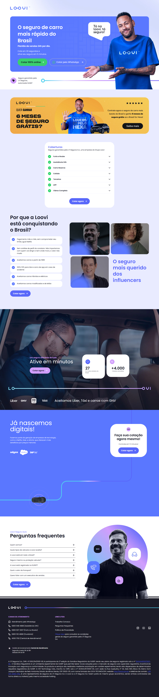
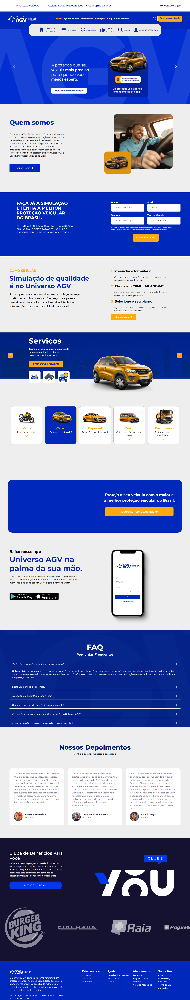
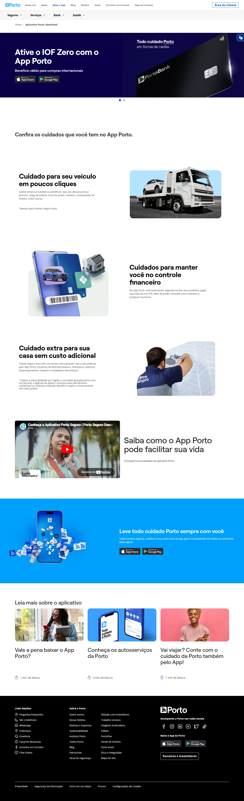
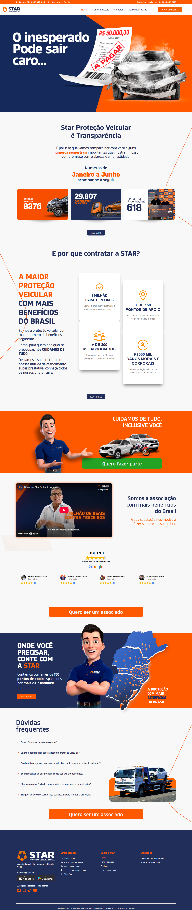

Análise Competitiva de mercado: APVS Brasil
Uma auditoria detalhada de CRO e experiência do usuário nas principais associações e seguradoras do país.
1. APVS (Análise Interna)
A maior associação de proteção veicular do país, sustentada por uma rede física massiva e burocracia zero.

Headline / Proposta: "Proteção Veicular com Burocracia Zero. Conheça nossa estrutura."
CTA Principal: "Tour 360°" e "Fazer Cotação".
Estrutura e Diferenciais:
- Burocracia Zero: Sem análise de perfil, CPF ou Serasa, capturando o público rejeitado pelo mercado tradicional.
- Segmentação de Nicho: Landing pages específicas para Uber, 99 e Taxistas.
- Modelo Híbrido: Combinação de força de vendas física com suporte digital.
Prova Social:
- Transparência Física: O Tour 360° na sede é o principal argumento de confiança.
- Volume de Associados: Menções implícitas à liderança de mercado.
Atritos e Oportunidades:
- Headline Indireta: O tour físico pode distrair o usuário que busca velocidade.
- Concorrência de Cliques: O botão de 2ª via compete com o fluxo de vendas.
2. Loovi
Insurtech digital que combina tecnologia de ponta com um apelo mediático extremamente agressivo.

Headline / Proposta: "O seguro de carro mais rápido do Brasil. Cote em 30 segundos."
CTA Principal: "Quero proteger meu carro" (Botão vibrante em roxo/rosa).
Estrutura e Diferenciais:
- Ativação Digital: Seguro ativado em 5 minutos via aplicativo, sem vistoria presencial.
- Tecnologia de Funil: Experiência mobile-first impecável e extremamente rápida.
Prova Social:
- Endosso de Celebridade: Neymar Jr como embaixador resolve o funil de confiança instantaneamente.
- Escala Digital: Menção aos +100 mil clientes ativos.
Atritos e Oportunidades:
- Feedback de Processo: Falta um indicador visual claro dos passos após a cotação inicial.
3. Bradesco Seguros
O modelo bancário tradicional, focando em recompensas tangíveis imediatas para capturar leads.

Headline / Proposta: "Seguro Auto: Ganhe 1000 pontos Livelo de cashback contratando agora."
CTA Principal: "Saiba mais" (Botão menos agressivo, focado em informação).
Estrutura e Diferenciais:
- Ecossistema de Pontos: Integração com Livelo é um diferencial de valor sustentável.
- Cashback Imediato: O benefício financeiro direto atua como um forte ativador de contratação.
Prova Social:
- Poder da Marca: A marca Bradesco carrega uma herança de confiança e solidez.
- Selos e Prêmios: Menções a prêmios do setor bancário/seguros.
Atritos e Oportunidades:
- Passividade de CTA: "Saiba mais" não gera a urgência necessária para venda direta.
- Header Poluído: Excesso de links do ecossistema bancário desviam o foco do usuário.
4. Universo AGV
Foco em proximidade e prova social humanizada através de associados reais em todo o território nacional.

Headline / Proposta: "A proteção que seu veículo mais precisa para quando você menos espera."
CTA Principal: "WhatsApp Flutuante" (Foco em cotação assistida).
Estrutura e Diferenciais:
- Proximidade Regional: Rede de suporte física e regionalismo forte na comunicação.
- Agilidade de Entrada: Formulário de cotação rápido e direto na primeira dobra.
Prova Social:
- Humanização de Marca: Diferente do modelo frio corporativo, foca em pessoas reais ajudando pessoas reais.
- Testemunhos Detalhados: Incluem profissão e localidade, aumentando a percepção de realidade.
Atritos e Oportunidades:
- Long-Form Friction: O formulário logo na entrada pode desestimular usuários mobile em busca de rapidez.
5. Porto Seguro
Transição estratégica de seguradora convencional para um ecossistema financeiro e de serviços completo.

Headline / Proposta: "Todo cuidado Porto em forma de cartão. Ative o IOF Zero agora."
CTA Principal: "Peça o seu Cartão Porto" (Porta de entrada para o ecossistema).
Estrutura e Diferenciais:
- Ecossistema Bancário: O seguro deixa de ser o fim e passa a ser o meio de atração para serviços financeiros.
- Vantagem Exclusiva: Benefícios técnicos como IOF Zero atraem o público de alta renda/internacional.
Prova Social:
- Autoridade Centenária: A marca individual carrega o maior índice de confiança do mercado de seguros.
- Presença Digital: Milhares de avaliações positivas nos apps Apple/Google.
Atritos e Oportunidades:
- Excesso de Escolha: A diversidade de planos e benefícios pode causar paralisia de decisão no funil.
6. Bem Protege
Líder no segmento popular, utilizando o endosso de grandes celebridades sertanejas para escala nacional.

Headline / Proposta: "Seu seguro começa aqui! Faça como o Embaixador Gusttavo Lima."
CTA Principal: "Solicitar Cotação" (Ponto focal central).
Estrutura e Diferenciais:
- Aclamação Popular: A promessa de "Sem SPC/Serasa" remove o maior atrito de entrada para o público C/D.
- Rede de Assistência: Foco em "Proteção em todo o Brasil" com suporte 24h.
Prova Social:
- Embaixador Sertanejo: Gusttavo Lima traz autoridade e confiança imediata para as classes populares.
- Número de Protegidos: Menção expressiva ao volume de associados ativos.
Atritos e Oportunidades:
- Peso Visual: O excesso de elementos gráficos pode impactar a velocidade de carregamento mobile.
7. Star Proteção Veicular
Aposta na agressividade visual, transparência operacional e excelentes índices de satisfação digital.

Headline / Proposta: "A Proteção que você merece. Estrela em atendimento e transparência."
CTA Principal: "Solicitar Minha Cotação" (Destaque em Amarelo/Contraste).
Estrutura e Diferenciais:
- Foco em Sinistro: Exibição de dados reais de indenizações pagas para reduzir objeções de risco.
- Clube Star: Programa de benefícios agressivo para novos associados.
Prova Social:
- Índice Google: Destaque para o selo 4.9★ baseado em avaliações reais.
- Transparência Operacional: Contador de indenizações pagas visível no site.
Atritos e Oportunidades:
- Ruído de Interface: O excesso de cores vibrantes pode dispersar o foco do CTA principal.
8. Assegura Brasil
Estratégia baseada em tradição de mercado e programas de viralidade orgânica (MGM).

Headline / Proposta: "Proteção a partir de R$ 99,90. A sua confiança é o nosso compromisso."
CTA Principal: "Cote Agora" (Simplificado e direto).
Estrutura e Diferenciais:
- Ancoragem de Preço: O valor de entrada sub-100 é um fortíssimo gatilho de aquisição.
- Indicação Premiada: Programa "Indicou, Ganhou" estimula o crescimento via base.
Prova Social:
- Tempo de Casa: Destaque para os +10 anos de operação ininterrupta.
- Selo Reclame Aqui: Exibição de bons índices de resolução de problemas.
Atritos e Oportunidades:
- UX Mobile: Elementos de navegação pequenos dificultam a interação em telas menores.
9. Tokio Marine
O rigor japonês aplicado a produtos digitais altamente modulares e personalizáveis.

Headline / Proposta: "Cote, personalize e contrate. A solidez de uma seguradora global ao seu alcance."
CTA Principal: "Personalizar Seguro" (Foco em autonomia do usuário).
Estrutura e Diferenciais:
- Simulação em Tempo Real: Permite ajustar coberturas e ver o impacto imediato no preço.
- Solidez Segmentada: Opções de seguro auto "Essencial" vs "Premium".
Prova Social:
- Capital Japonês: A herança nipônica é usada como sinônimo de precisão e solvência.
- Menção Global: Presente em mais de 30 países, transmitindo escala.
Atritos e Oportunidades:
- Barreira de CPF: Solicitar dados sensíveis no primeiro clique pode aumentar o bounce rate.
Benchmark: Matriz Comparativa
Visão consolidada das capacidades digitais e diferenciais estratégicos dos principais players do setor.
| Concorrente | Modelo | Cotação Online | App Móvel | Programa / Clube | Prova Social | Embaixador(es) |
|---|---|---|---|---|---|---|
| Porto Seguro | Seguradora | Sim | App Porto | PortoPlus | Institucional | Não |
| Loovi | Insurtech | 100% (30s) | Sim | Não | +100 mil clientes | Neymar, RC... |
| Bem Protege | Insurtech | Sim | Sim | Não | 400 mil protegidos | Gusttavo Lima |
| Universo AGV | Prot. Veicular | Via Form | Sim | Portal Benefícios | Real (Fotos) | Não |
| Bradesco Seguros | Seguradora | Sim | Sim | Clube + Livelo | Prêmios | Não |
| Tokio Marine | Seguradora | Sim | Sim | Não | Selos Qualidade | Não |
| Star Proteção | Prot. Veicular | Não | Sim | Clube Star | 4.8 Google | Não |
| Assegura Brasil | Prot. Veicular | Formulário | Sim | Indicou, Ganhou | +10 anos | Não |
Insights Estratégicos
Seis alavancas prioritárias para a APVS Brasil maximizar sua taxa de conversão.
Cotação Automática
A automatização do primeiro orçamentário reduz a evasão de funil. 75% da concorrência já oferece simuladores.
Prova Social Transparente
Transformar a sede física em números reais de atendimento e indenizações para dissipar objeções de risco.
Estratégia App-First
Consolidar o aplicativo como centro da experiência do usuário, garantindo retenção de longo prazo.
Viralidade e CAC
Fortalecer programas de indicação gamificados para reduzir o custo de aquisição e aumentar o LTV.
Autoridade por Endosso
A associação a figuras de credibilidade traz solidez instantânea ao modelo de serviço.
Hiper-segmentação
Páginas dedicadas para perfis profissionais (Uber/99), focando na dor exata do tempo de parada.
Glossário Estratégico
CRO (Conversion Rate Optimization): Técnicas para elevar a eficiência do site em transformar visitantes em clientes.
Atrito: Elementos visuais ou técnicos que confundem ou impedem o usuário de avançar no funil.
CTA (Call to Action): Comandos e botões projetados para incentivar uma ação imediata (Ex: "Fazer Cotação").
Prova Social: Evidências externas (números, vídeos, tours) que reduzem a percepção de risco do serviço.